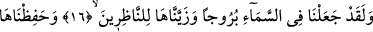
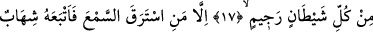
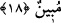

GÖKTE BURÇLAR YARATTIK
16. Andolsun, biz gökte birtakım burçlar yarattık ve seyredenler için onu
süsledik.
17. Onu taşlanmış (kovulmuş) her şeytandan koruduk.
18. Ancak kulak hırsızlığı eden müstesna. Onun da peşine açık bir alev sütunu
düşer.
“Andolsun, biz gökte birtakım burçlar” yâni yedi gökteki yedi gezegenin konakladığı
köşkler “yarattık”
Nisâbü’s-sıbyân’da sırasıyla bu gezegenlere şöyle işâret edilmektedir:
Yedi yıldız vardır ki dünyâda,
Kâh onlardan yardım, kâh zarar gelir:
Bunlar Ay, Utarid ve Zühre
Güneş, Merih, Müşteri ve Zühal’dir
Buradaki burçlar, görünüm ve özellikleri birbirinden farklı on iki burçtur. Bunların
adları şöyledir: Koç, boğa, ikizler, yengeç, aslan, başak, terazi, akrep, yay, oğlak, kova
ve balık. Burçlar ve konak yerleri ile alâkalı geniş açıklamayı Yunus sûresinin
başlarında. (5.âyette) yapmıştık. Oraya bakılabilir. Yüksek köşk demek olan ‘burç’
adının verilmesi, bu burçların yıldızlar için tıpkı konakların sâkinleri için gördüğü
vazifeyi görmesinden ileri gelmiştir. Burç lafzı “tebberüc (açılma-saçılma)”’dan
müştaktır. Çünkü burçlar görünür vaziyettedir.
Şerhu’t-Takvîm’de şöyle der: ‘Burç’ lafzı lügatte kale anlamındadır. Kalenin amacı
ise içine girilip içeridekilere ulaşılmasını engellemektir. Bir feleğin bir devri kısımlara
bölünüp her kısma ‘burç’ adı verilir. Her burcun uzunluğu bir kutuptan diğer kutba 30
derece, genişliği ise 180 derecedir. Felek, bu kısımlardan birinde iken meydana gelen
olaylar o burçta meydana gelmiş sayılır. İşte felekte var olduğu farz edilen bu kısımlar,
içindeki yıldız ve diğer şeylerle süflî âlemdeki şahısların tasarruflarını engelleyen
şeyler gibi addedildiği için bu münâsebet dikkate alınarak onlara ‘burçlar’ diye
isimlendirilmiştir. Nitekim “Biz göğü korunmuş bir tavan yaptık.” (el-Enbiya, 21/32)
âyeti ile bu husûsa işaret edilir.